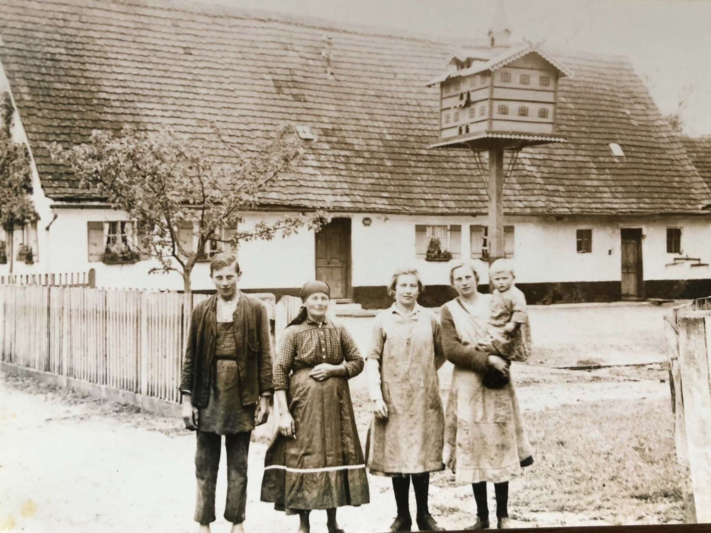

Hinterkaifeck Murders
A Creeping Dread: In the days leading up to the spring of 1922, an unsettling atmosphere descended upon Hinterkaifeck, a remote and isolated farmstead in the Bavarian woods of Germany. The patriarch of the family, Andreas Gruber, began noticing inexplicable occurrences. He found a strange, unfamiliar newspaper from Munich on his property. A set of house keys went missing. Most chilling of all, he discovered a fresh trail of footprints in the late-winter snow leading straight from the dark edge of the forest to the farm's machine room—but there were no footprints leading back out. He even reported hearing heavy footsteps in the attic, though searches revealed nothing. The family's previous maid had actually quit six months earlier, terrified that the farm was haunted. The Slaughter in the Barn: On March 31, a new maid named Maria arrived at the farm, completely unaware of the looming danger. Sometime that evening, the unknown intruder—or intruders—made their move. In a methodical and brutal sequence, four members of the family (Andreas, his wife Cäzilia, their widowed daughter Viktoria, and her seven-year-old daughter) were lured one by one into the darkness of the barn. There, they were struck down and killed with a mattock (a heavy farming tool similar to a pickaxe). The killer then moved into the farmhouse, bludgeoning the sleeping two-year-old Josef in his cot and killing the newly arrived maid in her bedchamber.

The Phantom of the Farm: The most terrifying aspect of the Hinterkaifeck murders was what happened afterward. The killer did not immediately flee the scene of the crime. Evidence showed that the murderer stayed on the farm for several days, living right alongside the corpses. They casually ate the family's food in the kitchen, tended to the cattle, fed the farm dog, and kept the fires burning—neighbors even reported seeing smoke rising from the chimney over the weekend. By the time concerned neighbors finally entered the property on April 4 to investigate the family's absence, the phantom killer had vanished without a trace.
Key Facts
Date: March 31 – April 1, 1922 (Bodies discovered April 4)
Location: Hinterkaifeck Farm, Bavaria, Germany
Casualties: 6 dead (the entire Gruber family and their maid); the case profoundly shocked the nation and birthed a century of true-crime lore
Cause: Unsolved mass murder; the identity and motive of the killer remain completely unknown to this day.
Lesson: The Hinterkaifeck murders remain one of Germany's most infamous and baffling cold cases. Despite hundreds of arrests, interrogations of traveling vagrants, and deep dives into the family’s complex personal lives, no motive was ever definitively proven, and the weapon was hidden within the floorboards of the home itself. The tragic mishandling of the early investigation—with locals trampling the crime scene and moving bodies before police arrived—destroyed any hope of gathering conclusive forensic evidence. It stands today as a terrifying historical reminder of the deep, unsolved darkness that can hide in isolated places.